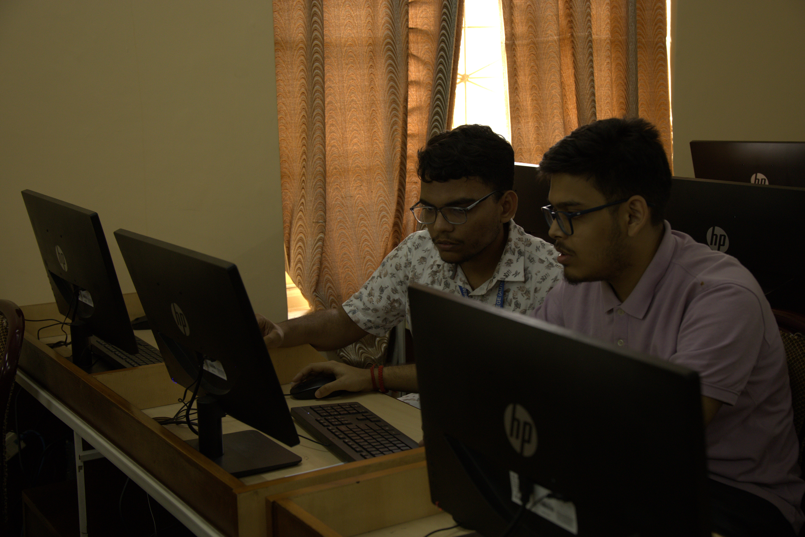

The Xaverian Astronomical Society (XAS) is an integrated community of St. Xavier’s College (Autonomous) Kolkata, united in pursuit of knowledge in the fields of Astronomy, Astrophysics, and Space Science. Founded in 2019, the society marks the college's primary initiative toward academic development in Astronomy. Directed by Father Principal Rev. Dr. Dominic Savio, SJ, XAS operates in close association with the Fr. Eugène Lafont Observatory (FELO), India’s largest active institutional observatory, located atop the college rooftop.

Background
Throughout the academic session, XAS hosts various events ranging from seminars and outreach programs to observatory sessions. Notable traditions include the Fr. Lafont Memorial Lectures and the bi-annual flagship event, Astrovaganza.
The inaugural edition in October 2023 featured a talk on the Chandrayaan missions by ISRO scientist Dr. Tirtha Pratim Das. The second edition in April 2024 included sessions by Prof. Dibyendu Nandi (IISER Kolkata) and an astrophotography exhibition by Mr. Soumyadeep Mukherjee.
Astrovaganza 2025 Events

Scheduled from 26th to 28th February 2025, Astrovaganza 2025 coincides with the celebration of National Science Day. The diverse lineup of events includes:
● Event Horizon: Pitch the Future – Idea Presentation
● Code Nebula: Encrypt the Universe – Coding Event
● Bandits of Callisto: Astronomy Quiz
● The Great Cosmic Parley: Debate
● Anthologies of Andromeda: Creative Writing
● Galactic Gaze: Astrophotography Exhibition
● Astral Aesthetics: Poster Design Competition
National Science Day Celebration

The highlight of the festival occurs on 28th February. In association with the Post Graduate and Research Department of Physics, the society will host a stellar talk titled “Tale of Telescopes” by Dr. Tapas Baug, Assistant Professor at the S.N. Bose National Centre for Basic Sciences (SNBNCBS).
With a plethora of scientific engagements, Astrovaganza 2025 promises to foster intellectual harmony and ignite a perpetual spirit of discovery among the young astronomers of the college.